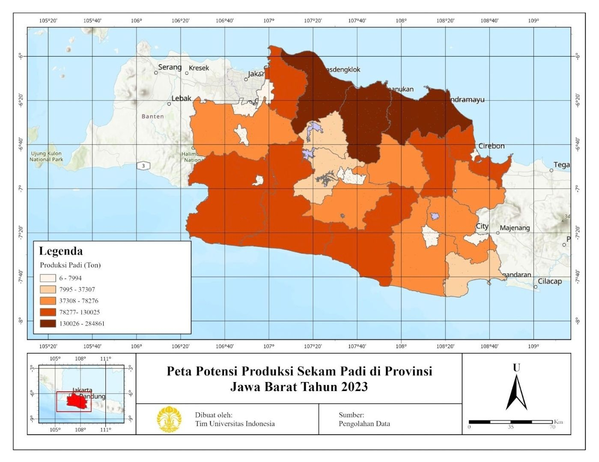
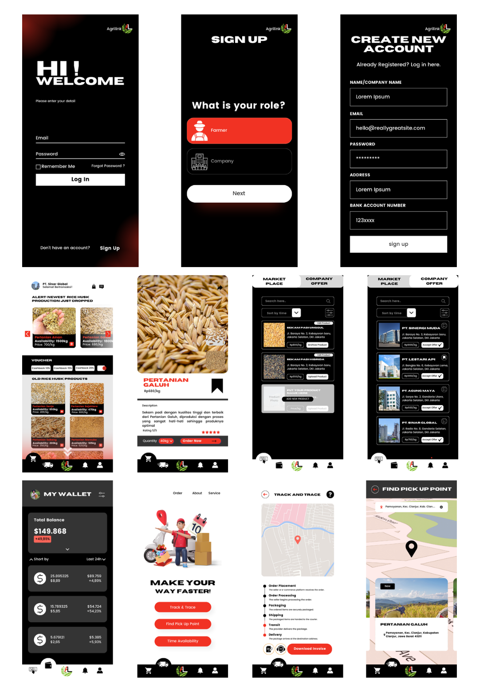

Pengembangan Rantai Pasok Berkelanjutan: Konversi Sekam Padi menjadi Bioethanol dan Penerapan Aplikasi AgriLink di Jawa Barat
Latar belakang
Pemanasan global ditandai dengan meningkatnya suhu rata-rata permukaan bumi akibat efek gas rumah kaca. Salah satu penyebab utama terjadinya pemanasan global adalah pembakaran bahan bakar fosil untuk pembangkit listrik, transportasi, dan industri. Indonesia tercatat sebagai penyumbang emisi karbon terbesar kedelapan di dunia, sementara cadangan bahan bakar fosil terus menipis dan diperkirakan habis dalam beberapa dekade ke depan. Kondisi ini mendorong transisi ke energi baru dan terbarukan (EBT), salah satunya melalui pemanfaatan biomassa.
Salah satu biomassa yang berpotensi besar di Indonesia adalah sekam padi. Sekam sering dianggap limbah tanpa nilai ekonomi dan kerap dibakar, sehingga justru menambah emisi. Padahal sekam kaya selulosa sehingga cocok diolah menjadi bioethanol. Indonesia adalah produsen padi terbesar ketiga dunia, dan Jawa Barat merupakan provinsi produsen padi terbesar kedua dengan produksi sekitar 9,1 juta ton pada 2023. Karena itu, penelitian ini memetakan potensi sekam padi dan bioethanol di Jawa Barat, serta merancang aplikasi untuk mengatasi kendala distribusinya.
Data yang digunakan
| Data | Format Data | Jenis Data | Sumber |
|---|---|---|---|
| Produksi padi per kabupaten/kota 2023 | Tabular | Sekunder | BPS Jawa Barat |
| Rasio produksi sekam (0,2) | Tabular | Sekunder | Beagle (1978) |
| Nilai kalor dan komposisi biomassa sekam | Tabular | Sekunder | Lim dkk. (2012) |
| Rasio produksi bioethanol | Tabular | Sekunder | Kim dan Dale (2004) |
| Batas administrasi kabupaten/kota | Vektor | Sekunder | Badan Informasi Geospasial |
Metode
Potensi sekam padi dihitung dari data produksi padi tiap kabupaten/kota dengan rasio 0,2 terhadap total produksi padi, mengacu pada Beagle (1978). Hasilnya dipetakan secara spasial dalam bentuk peta tematik berskala warna, sehingga sebaran produksi padi dan potensi sekam di Jawa Barat dapat dibandingkan.
Potensi bioethanol dihitung dari rasio konversi biomassa padi menurut Kim dan Dale (2004), dengan asumsi ideal bahwa tidak ada kehilangan selama pengolahan dan efisiensi pengumpulan sekam mencapai 100%. Konversi sekam menjadi bioethanol sendiri melalui proses biokimia dalam tiga tahap: pretreatment untuk membuka struktur lignoselulosa, hidrolisis enzimatik untuk mengubah selulosa menjadi glukosa, dan fermentasi untuk mengubah glukosa menjadi bioethanol.
Untuk mengatasi kendala distribusi, dirancang AgriLink, aplikasi berbasis Internet of Things (IoT) yang menghubungkan petani dengan perusahaan pengolah. Rancangan antarmuka dibuat untuk dua jenis pengguna, yaitu petani dan perusahaan.
Hasil
Produksi padi Jawa Barat pada 2023 mencapai 9.140.040 ton, dengan potensi sekam sebesar 1.828.008 ton dan potensi bioethanol sekitar 180.755 liter, setara dengan sekitar 113 ribu liter bensin. Potensi terbesar berada di wilayah utara yang ditandai warna paling gelap pada peta, yaitu Indramayu, Karawang, dan Subang.
| Kabupaten | Produksi Padi (Ton) | Potensi Sekam (Ton) | Potensi Ethanol (Liter) |
|---|---|---|---|
| Indramayu | 1.424.303 | 284.861 | 28.167 |
| Karawang | 1.131.977 | 226.395 | 22.386 |
| Subang | 1.027.660 | 205.532 | 20.323 |
| Cianjur | 650.123 | 130.025 | 12.857 |
| Majalengka | 558.430 | 111.686 | 11.044 |
| Total Jawa Barat | 9.140.040 | 1.828.008 | 180.755 |

Distribusi sekam mengikuti pola produksi padi karena jumlah sekam berbanding lurus dengan volume padi yang dihasilkan. Sekam padi memiliki nilai kalor sekitar 15,84 MJ/kg dengan kandungan hemiselulosa 28,6%, selulosa 28,6%, lignin 24,4%, dan bahan ekstraktif 18,4%, yang menunjukkan kelayakannya sebagai bahan baku bioethanol. Namun, potensi tersebut baru bermakna bila disertai pengelolaan yang baik, karena infrastruktur yang terbatas dan distribusi yang belum terintegrasi masih menjadi hambatan.
Untuk menjawab hambatan itu, AgriLink memungkinkan petani mempublikasikan produk sekam beserta lokasi dan ketersediaannya, sedangkan perusahaan dapat mengajukan penawaran harga secara terbuka. Petani memilih penawaran tertinggi, lalu koordinat dan detail ekspedisi dikirimkan ke perusahaan untuk pengambilan yang efisien. Aplikasi ini juga dilengkapi marketplace, dompet elektronik untuk petani, pelacakan pengiriman (track and trace), informasi titik pengambilan, dan jadwal ketersediaan waktu pengiriman.

Kesimpulan
Jawa Barat memiliki potensi besar untuk mengembangkan sekam padi menjadi bioethanol, terutama di wilayah utara sebagai sentra produksi padi. Pemanfaatan ini dapat mengurangi ketergantungan pada energi fosil sekaligus menekan emisi dari pembakaran sekam, sementara aplikasi AgriLink dirancang untuk menjembatani petani dan perusahaan agar distribusi sekam lebih efisien dan menguntungkan petani. Keberhasilannya tetap memerlukan dukungan berkelanjutan dari pemerintah dan pemangku kepentingan, mulai dari kebijakan, infrastruktur teknologi, hingga pelatihan bagi petani dan pelaku industri.
← View other projects